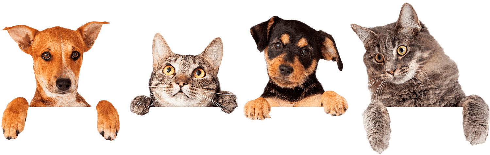

Контакты

ВАЖНО - НА ДАННЫЙ МОМЕНТ ПРИЮТ ПЕРЕПОЛНЕН И НЕ ПРИНИМАЕТ НОВЫХ ЖИВОТНЫХ.
Фонд работает над тем, чтобы обеспечить качественные условия передержки для более 160 животных которые находятся под нашей опекой пока они не найдут свою постоянную семью.
✉ e-mail:
fond.drug08@mail.ruТак же можете обращаться в соц.сетях : Инна Малая (администратор страницы facebook),
Наталья Титомир (председатель фонда)
☎ Телефоны:
050 705 01 76 Черкасова Кирина(Хотите помочь финансово или стать волонтером/куратором/забрать питомца)
050 565 36 98 , 095 051 96 69 Виктория
(Можете помочь с ремонтом/строительством будок или что-то из этого списка
приносите в зоомагазин "Любимчик" по адресу: ул. В.Стуса, 74 или звоните Виктории
Прием телефонных звонков с 9:00 до 19:00.
⛳ Адрес:
Донецкая обл., г.Краматорск, Благотворительный фонд ДругНаша передержка находится на территории КФЗ (ООО “Краматорский ферросплавный завод” по адресу: ул.Дмитрия Мазура, 18) в промзоне рядом с ул. О. Тихого.